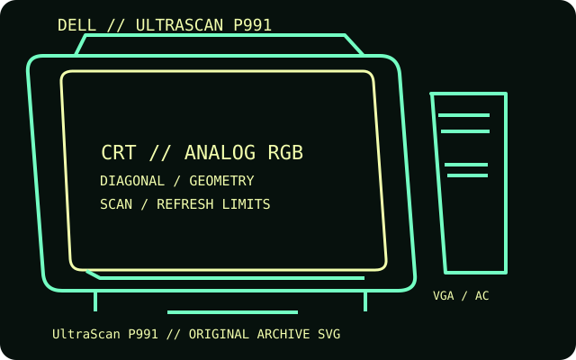

[ INDIVIDUAL COMPONENT // DISPLAYS ]
Dell UltraScan P991
A 19-inch-class aperture-grille desktop CRT, sold in beige and black finishes and derived from Sony's CPD-G400 display family.

IDENTIFICATION: Match the complete model and regional suffix on the rear label. Published CRT timing limits do not guarantee a particular used unit's condition; verify the tested host, cable and displayed mode.
Specifications
| Catalog subcategory | CRT displays |
|---|---|
| Exact product / family | Dell UltraScan P991 |
| Tube diagonal & image geometry | 19-inch nominal FD Trinitron / aperture-grille tube; approximately 18-inch viewable image; 0.24 mm grille pitch. The physical image is 4:3. |
| Resolution & refresh | Up to 1600 × 1200 at 85 Hz; horizontal scan range 30–107 kHz and vertical range 48–120 Hz for the related CPD-G400 timing family. Use the manual's timing limits and the host's mode list. |
| Video inputs | One attached 15-pin HD-D-sub (VGA) analog RGB cable; no separate digital input. The Dell P991 has no BNC input set. |
| Power | AC mains through the rear power inlet; the label on the individual monitor governs regional voltage. A Dell quick-setup manual does not publish a wattage; secondary model catalogs list up to approximately 120 W. Check the rear nameplate before connecting. |
| Host compatibility | Connect to a PC or Mac graphics output that provides analog VGA RGB and a supported multiscan timing. A modern HDMI/DisplayPort-only host needs a suitable active digital-to-VGA converter; passive adapters do not create analog video. |
Identification and compatibility notes
The P991 is a Dell-labeled model related to Sony's CPD-G400, but the case, cable and control details are not interchangeable with every Sony version. Identify the rear label and use its electrical rating.
Record the rear-label model, regional voltage rating, video connector used, source timing, adapter chain, visible image area and geometry/convergence condition. CRTs contain hazardous high-voltage circuits and heavy components; internal service belongs to qualified technicians.
Manufacturer documentation and sources
- CRT Database — Dell P991 model identification and notesCatalog record and product identification.
- Dell — UltraScan P991 Quick Setup (manual copy)Dell-branded setup and safety information.
- MobileSpecs — Dell P991 specification catalogSecondary catalog entry for the listed power figure.